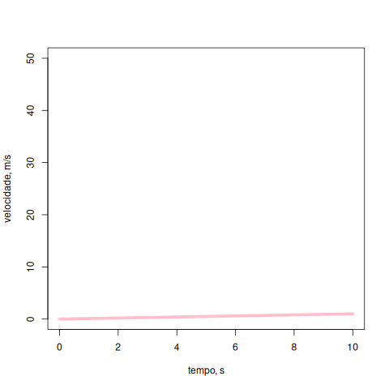

Saudações !
Olá ! Seja muito bem-vindo a este treinamento para capacitação em ferramentas digitais para o Ensino Médio. A ideia central desta etapa é lhe oferecer ferramentas que possibilitem agregar valor à imagens de moléculas, gráficos e mapas observados durante o ensino médio, mas com interatividade e animação.
Essa interatividade permitirá que você recrie e altere figuras que se apresentam estáticas em livros-texto do ensino médio para um objeto didático mais vivo. Daí a escolha do termo vivificando, que etiqueta a temática deste material.

Por quê “vivificando” ?
Por sua vez, tal vivificação para moléculas, gráficos e mapas deverá permitir uma visualização 3D e animações para modelos atômicos, bem como diversos graus de interatividade por cliques de mouse à gráficos e mapas - animações, seleção de pontos, zoom, simulações, mouse over (informações sobre o ponto gráfico por simples passagem do mouse), deslizadores, menus, e outros tantos.
O material contido aqui pretende ser autoinstrucional e com curva suave de aprendizado. Nossa proposta é focar no potencial que as ferramentas podem oferecer ao ensino e aprendizagem como uma metodologia ativa, ilustrando seu emprego diretamente nos conteúdos do ensino médio. Dessa forma, não pretendemos explorar “a fundo” as capacidades das ferramentas propostas, pois isso exigiria um tempo e esforços mais significativos. Assim, você pode pensar nesse treinamento metaforicamente, como um mapa panorâmico de pontos turísticos a visitar, sem a pretensão de conhecer em detalhes cada um.
As ferramentas
Resumindo rapidamente, a caixa de ferramentas para este treinamento possui somente dois utensílios: um programa para visualização tridimensional de moléculas, e um programa para criação de gráficos e mapas interativos. Ambos os programas são de distribuição livre (gratuitos) e rodam em navegador de internet (browser), sem necessidade de instalação em computador.
E como todo computador, notebook, tablet e smartphone possui um navegador, pode-se utilizar os objetos didáticos em qualquer um desses dispositivos.
Algumas políticas públicas
Este treinamento pretende ressoar junto a atuais iniciativas do Governo Federal junto ao Plano Nacional de Educação (PNE) para o decênio 2024-2034 em análise na Câmara dos Deputados (PL 5665/23), defendido na Conferência Nacional de Educação - CONAE 2024, e tangentes à capacitação digital de professores e alunos (literacia digital).
E, mais especificamente, promvendo a educação digital para o uso crítico, reflexivo e ético das tecnologias da informação e da comunicação, e a garantia da qualidade e a adequação da formação às demandas da sociedade, do mundo do trabalho e das diversidades de populações na educação profissional e tecnológica.
Nesse sentido, vale a pena mencionar alguns projetos embasados no desenvolvimento de competências previstas na BNCC Computação de 2022, da Base Nacional Comum Curricular (BNCC), tais como Escola em Tempo Integral do MEC, a Estratégia Nacional de Escolas Conectadas (Enec), o Programa Mais Ciência Na Escola, e à Chamada para a Apresentação de Propostas de Disseminação de Produtos de Inovação Tecnológica voltados a todos os níveis de educação da CAPES, esse último do qual se originou este projeto.